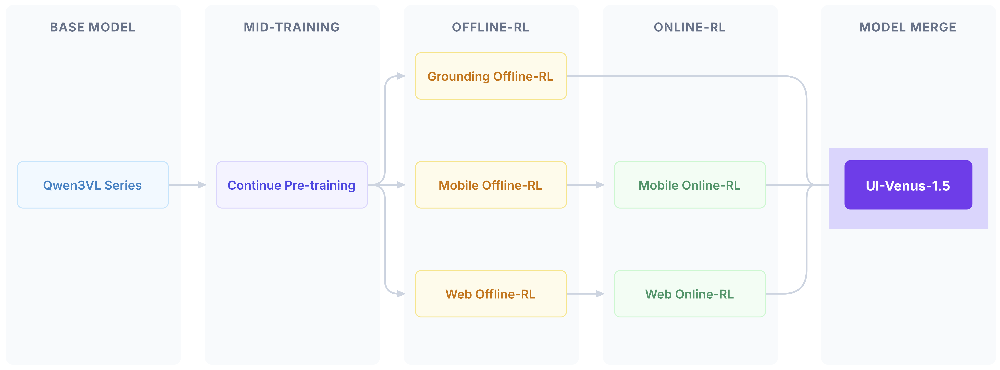
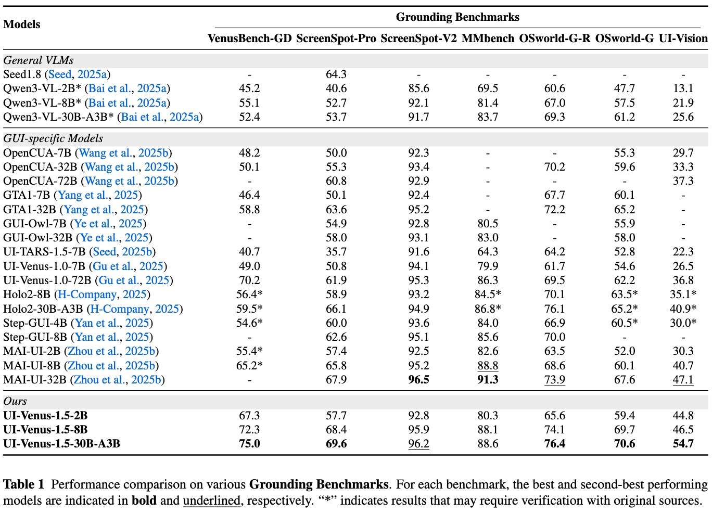

Key Features
The Four-Stage Pipeline of UI-Venus-1.5: (1) Mid-Training on large-scale GUI data for domain knowledge injection; (2) Offline-RL for task-specific optimization across grounding, mobile, and web objectives; (3) Online-RL to enhance navigation in complex, real-world settings; and (4) Model Merge, which unifies the specialized models into the final UI-Venus-1.5.
New SOTA
Achieves 77.6% on AndroidWorld and 69.6% on ScreenSpot-Pro, outperforming GPT-4o and previous GUI agents.
Novel Training Pipeline
Features a comprehensive recipe of 10B-token Mid-Training, Scaled Online-RL, and TIES-Merging for robust performance.
Intelligent & Safe
Introduces Refusal-Aware Grounding to minimize hallucinations by correctly identifying non-existent elements.
Real-World Ready
Unified end-to-end agent optimized for complex Chinese mobile ecosystems and diverse Web tasks.
Task Demos
Task 1: 打开喜马拉雅，帮我播放疯狂动物城2，设置列表循环播放
Task 2: 打开七猫免费小说，将小说脑洞榜前三名都加入书架
Task 3: 打开微博，搜索杭州天气，并根据天气进行评论
Task 4: 打开小红书，搜索烘焙教程，找到播放量大于1w的视频进行播放
Task 5: 打开今日头条，点击进入热榜第1名，查看事件速览
Grounding Performance

Navigation Performance
AndroidWorld Results
AndroidLab Results
VenusBench-Mobile Results
WebVoyager Results
Citation
UI-Venus-1.5 Technical Report
@misc{venusteam2026uivenus15technicalreport,
title={UI-Venus-1.5 Technical Report},
author={Venus Team and Changlong Gao and Zhangxuan Gu and Yulin Liu and Xinyu Qiu and Shuheng Shen and Yue Wen and Tianyu Xia and Zhenyu Xu and Zhengwen Zeng and Beitong Zhou and Xingran Zhou and Weizhi Chen and Sunhao Dai and Jingya Dou and Yichen Gong and Yuan Guo and Zhenlin Guo and Feng Li and Qian Li and Jinzhen Lin and Yuqi Zhou and Linchao Zhu and Liang Chen and Zhenyu Guo and Changhua Meng and Weiqiang Wang},
year={2026},
eprint={2602.09082},
archivePrefix={arXiv},
primaryClass={cs.CV},
url={https://arxiv.org/abs/2602.09082},
}Related Works
UI-Venus-1.0 Technical Report
@misc{gu2025uivenustechnicalreportbuilding,
title={UI-Venus Technical Report: Building High-performance UI Agents with RFT},
author={Zhangxuan Gu and Zhengwen Zeng and Zhenyu Xu and Xingran Zhou and Shuheng Shen and Yunfei Liu and Beitong Zhou and Changhua Meng and Tianyu Xia and Weizhi Chen and Yue Wen and Jingya Dou and Fei Tang and Jinzhen Lin and Yulin Liu and Zhenlin Guo and Yichen Gong and Heng Jia and Changlong Gao and Yuan Guo and Yong Deng and Zhenyu Guo and Liang Chen and Weiqiang Wang},
year={2025},
eprint={2508.10833},
archivePrefix={arXiv},
primaryClass={cs.CV},
url={https://arxiv.org/abs/2508.10833},
}VenusBench-GD
@misc{zhou2025venusbenchgdcomprehensivemultiplatformgui,
title={VenusBench-GD: A Comprehensive Multi-Platform GUI Benchmark for Diverse Grounding Tasks},
author={Beitong Zhou and Zhexiao Huang and Yuan Guo and Zhangxuan Gu and Tianyu Xia and Zichen Luo and Fei Tang and Dehan Kong and Yanyi Shang and Suling Ou and Zhenlin Guo and Changhua Meng and Shuheng Shen},
year={2025},
eprint={2512.16501},
archivePrefix={arXiv},
primaryClass={cs.CV},
url={https://arxiv.org/abs/2512.16501},
}